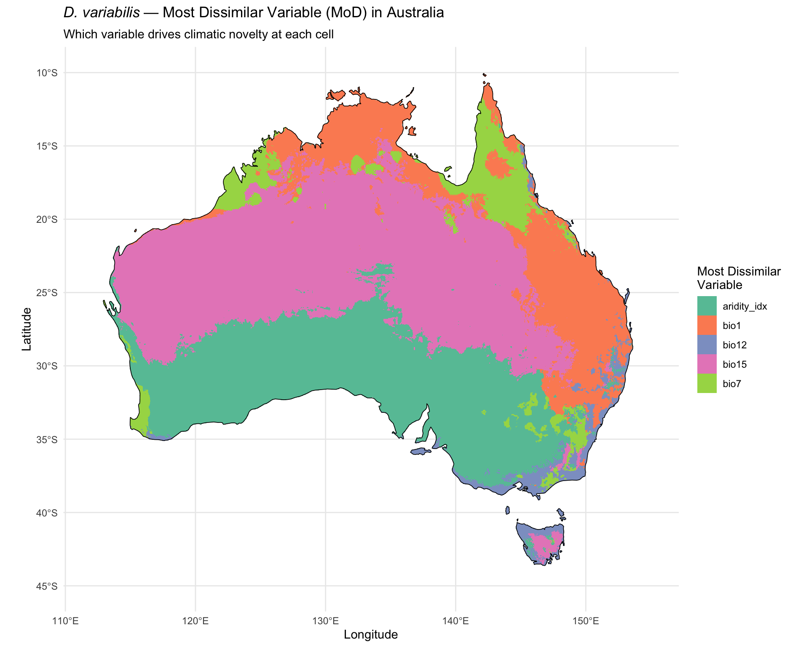
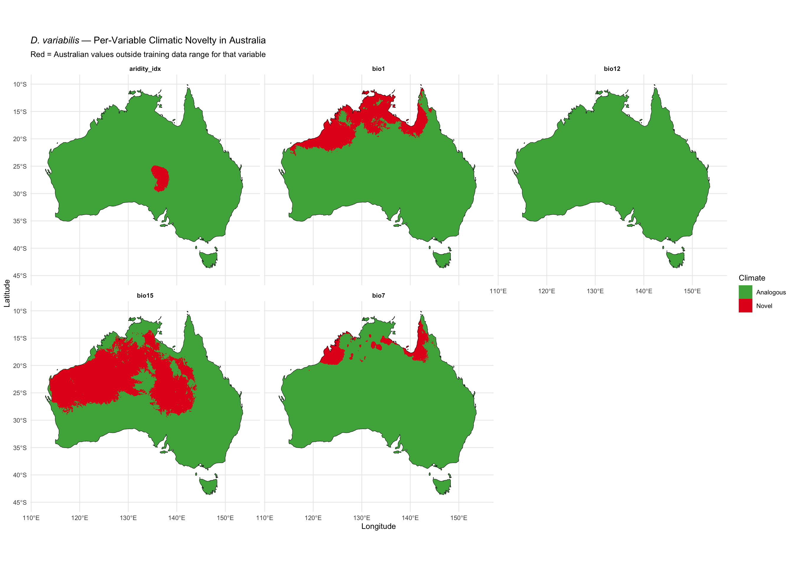
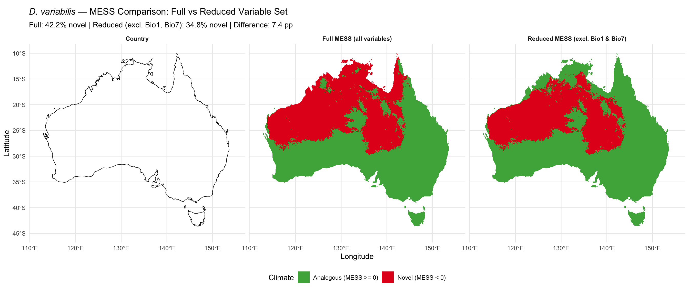

library(tidyverse)
library(terra)
library(sf)
library(rnaturalearth)
library(rnaturalearthdata)Step 7b: MESS Decomposition by Variable
Dermacentor variabilis Species Distribution Model
Overview
The composite MESS analysis (Step 7) showed 64.2% of Australia has novel climate (MESS < 0). This script decomposes MESS by variable to determine which variables drive novelty in which regions. If Bio1 and Bio7 (cold-tolerance variables) are primarily responsible, the novelty estimate may be inflated for the purpose of assessing D. variabilis establishment risk — these variables encode winter severity gradients that are ecologically irrelevant in Australia.
Key outputs: 1. Map of Most Dissimilar Variable (MoD) across Australia 2. Per-variable novelty maps (where each variable has MESS < 0) 3. “Reduced MESS” excluding Bio1 and Bio7 — tests whether novelty drops substantially
1. Load data
base_dir <- "~/Library/CloudStorage/OneDrive-CSIRO/OneDrive - Docs/01_Projects/SDM/Dvariabilis_SDM"
processed_dir <- file.path(base_dir, "processed_data")
figures_dir <- file.path(base_dir, "figures")
env_M <- rast(file.path(processed_dir, "env_selected_M.tif"))
env_aus <- rast(file.path(processed_dir, "env_selected_aus.tif"))
occ_env <- readRDS(file.path(processed_dir, "occurrences_with_env.rds"))
bg_env <- readRDS(file.path(processed_dir, "background_with_env.rds"))
selected_vars <- readLines(file.path(processed_dir, "selected_variables.txt"))
aus <- ne_countries(country = "Australia", scale = "medium", returnclass = "sf")
# Reference data (training points)
ref_data <- bind_rows(
occ_env %>% dplyr::select(all_of(selected_vars)),
bg_env %>% dplyr::select(all_of(selected_vars))
)
sprintf("Variables: %s", paste(selected_vars, collapse = ", "))
sprintf("Reference data: %d training points", nrow(ref_data))[1] "Variables: aridity_idx, bio1, bio12, bio15, bio7"
[1] "Reference data: 14535 training points"2. Per-variable MESS
Calculate MESS independently for each variable. This shows where each variable contributes novel conditions.
# Function to compute per-variable MESS (similarity)
# Following the MESS formulation of Elith et al. (2010)
compute_var_mess <- function(env_layer, ref_values) {
ref_sorted <- sort(ref_values)
n <- length(ref_sorted)
ref_min <- ref_sorted[1]
ref_max <- ref_sorted[n]
app(env_layer, function(x) {
vapply(x, function(xi) {
if (is.na(xi)) return(NA_real_)
if (xi < ref_min) {
# Below reference range
return(100 * (xi - ref_min) / (ref_max - ref_min))
}
if (xi > ref_max) {
# Above reference range
return(100 * (ref_max - xi) / (ref_max - ref_min))
}
# Within range: find percentile
f <- sum(ref_sorted <= xi) / n * 100
return(min(f, 100 - f))
}, numeric(1))
})
}
# Compute per-variable MESS
var_mess_layers <- list()
for (v in selected_vars) {
cat(sprintf("Computing MESS for %s...\n", v))
var_mess_layers[[v]] <- compute_var_mess(
env_aus[[v]],
ref_data[[v]]
)
}
var_mess_stack <- rast(var_mess_layers)
names(var_mess_stack) <- selected_vars
# Composite MESS = minimum across all variables
composite_mess <- min(var_mess_stack)
names(composite_mess) <- "composite_mess"
sprintf("Per-variable MESS computation complete")Computing MESS for aridity_idx...
Computing MESS for bio1...
Computing MESS for bio12...
Computing MESS for bio15...
Computing MESS for bio7...
[1] "Per-variable MESS computation complete"3. Per-variable novelty summary
novelty_summary <- tibble()
for (v in selected_vars) {
vals <- values(var_mess_stack[[v]], na.rm = TRUE)
n_total <- length(vals)
n_novel <- sum(vals < 0)
n_below <- sum(values(env_aus[[v]], na.rm = TRUE) < min(ref_data[[v]], na.rm = TRUE))
n_above <- sum(values(env_aus[[v]], na.rm = TRUE) > max(ref_data[[v]], na.rm = TRUE))
novelty_summary <- bind_rows(novelty_summary, tibble(
variable = v,
pct_novel = round(100 * n_novel / n_total, 1),
pct_novel_below = round(100 * n_below / n_total, 1),
pct_novel_above = round(100 * n_above / n_total, 1),
mess_min = round(min(vals), 1),
mess_max = round(max(vals), 1)
))
}
cat("Per-variable novelty in Australia:\n")
novelty_summary %>%
arrange(desc(pct_novel)) %>%
print(n = Inf)
# Composite for comparison
comp_vals <- values(composite_mess, na.rm = TRUE)
sprintf("\nComposite MESS: %.1f%% novel (MESS < 0)", 100 * sum(comp_vals < 0) / length(comp_vals))Per-variable novelty in Australia:
# A tibble: 5 × 6
variable pct_novel pct_novel_below pct_novel_above mess_min mess_max
<chr> <dbl> <dbl> <dbl> <dbl> <dbl>
1 bio15 34.3 0 34.3 -27.5 50
2 bio1 15.2 0 15.2 -9.2 50
3 bio7 5.4 0 5.4 -23.6 50
4 aridity_idx 1.7 0 1.7 -1.6 50
5 bio12 0 0 0 -9.8 50
[1] "\nComposite MESS: 42.2% novel (MESS < 0)"4. Most Dissimilar Variable (MoD) map
# MoD = variable with minimum (most negative) MESS at each cell
mod_layer <- which.min(var_mess_stack)
names(mod_layer) <- "most_dissimilar_var"
# Convert to categorical for plotting
mod_df <- as.data.frame(mod_layer, xy = TRUE, na.rm = TRUE)
mod_df$variable <- selected_vars[mod_df$most_dissimilar_var]
mod_df$variable <- factor(mod_df$variable, levels = selected_vars)
# Count cells dominated by each variable
mod_counts <- mod_df %>%
count(variable) %>%
mutate(pct = round(100 * n / sum(n), 1)) %>%
arrange(desc(pct))
cat("Most Dissimilar Variable — proportion of Australia:\n")
print(as_tibble(mod_counts), n = Inf)
# Map
p_mod <- ggplot() +
geom_raster(data = mod_df, aes(x = x, y = y, fill = variable)) +
geom_sf(data = aus, fill = NA, colour = "black", linewidth = 0.3) +
scale_fill_brewer(palette = "Set2", name = "Most Dissimilar\nVariable") +
labs(
title = expression(italic("D. variabilis") ~ "— Most Dissimilar Variable (MoD) in Australia"),
subtitle = "Which variable drives climatic novelty at each cell",
x = "Longitude", y = "Latitude"
) +
theme_minimal(base_size = 11) +
coord_sf(xlim = c(112, 155), ylim = c(-45, -10))
print(p_mod)
ggsave(
file.path(figures_dir, "07b_mod_map.png"),
p_mod, width = 10, height = 8, dpi = 300
)Most Dissimilar Variable — proportion of Australia:
# A tibble: 5 × 3
variable n pct
<fct> <int> <dbl>
1 bio15 169504 42
2 aridity_idx 122087 30.3
3 bio1 68783 17.1
4 bio7 29580 7.3
5 bio12 13397 3.35. Per-variable novelty maps
# Create binary novel/analogous maps for each variable
var_novel_df <- list()
for (v in selected_vars) {
df <- as.data.frame(var_mess_stack[[v]], xy = TRUE, na.rm = TRUE)
names(df)[3] <- "mess"
df$variable <- v
df$novel <- df$mess < 0
var_novel_df[[v]] <- df
}
var_novel_all <- bind_rows(var_novel_df)
var_novel_all$variable <- factor(var_novel_all$variable, levels = selected_vars)
p_var <- ggplot() +
geom_raster(data = var_novel_all, aes(x = x, y = y, fill = novel)) +
geom_sf(data = aus, fill = NA, colour = "black", linewidth = 0.2) +
facet_wrap(~variable, ncol = 3) +
scale_fill_manual(
values = c("FALSE" = "#4DAF4A", "TRUE" = "#E41A1C"),
labels = c("Analogous", "Novel"),
name = "Climate"
) +
labs(
title = expression(italic("D. variabilis") ~ "— Per-Variable Climatic Novelty in Australia"),
subtitle = "Red = Australian values outside training data range for that variable",
x = "Longitude", y = "Latitude"
) +
theme_minimal(base_size = 10) +
theme(strip.text = element_text(face = "bold")) +
coord_sf(xlim = c(112, 155), ylim = c(-45, -10))
print(p_var)
ggsave(
file.path(figures_dir, "07b_per_variable_novelty.png"),
p_var, width = 14, height = 10, dpi = 300
)6. Reduced MESS — excluding Bio1 and Bio7
Test whether the 64.2% novelty estimate is inflated by cold-tolerance variables. Compute MESS using only the remaining variables (moisture and warm-season temperature).
# Identify which variables to exclude
cold_vars <- intersect(c("bio1", "bio7"), selected_vars)
warm_moisture_vars <- setdiff(selected_vars, cold_vars)
cat("Cold-tolerance variables excluded:", paste(cold_vars, collapse = ", "), "\n")
cat("Retained variables:", paste(warm_moisture_vars, collapse = ", "), "\n")
# Reduced MESS = minimum of per-variable MESS across retained variables only
reduced_mess <- min(var_mess_stack[[warm_moisture_vars]])
names(reduced_mess) <- "reduced_mess"
# Compare with composite
comp_vals <- values(composite_mess, na.rm = TRUE)
red_vals <- values(reduced_mess, na.rm = TRUE)
n_total <- length(comp_vals)
pct_novel_full <- round(100 * sum(comp_vals < 0) / n_total, 1)
pct_novel_reduced <- round(100 * sum(red_vals < 0) / n_total, 1)
pct_drop <- round(pct_novel_full - pct_novel_reduced, 1)
cat("\n--- MESS Comparison ---\n")
sprintf("Full MESS (all %d variables): %.1f%% novel", length(selected_vars), pct_novel_full)
sprintf("Reduced MESS (excl. Bio1, Bio7): %.1f%% novel", pct_novel_reduced)
sprintf("Novelty reduction: %.1f percentage points", pct_drop)
if (pct_drop > 15) {
cat("\nFINDING: Bio1/Bio7 substantially inflate climate novelty.\n")
cat("These variables encode winter severity — irrelevant to Australian establishment risk.\n")
cat("The reduced MESS provides a more ecologically meaningful estimate of climate analogues.\n")
}
# Map comparison
comp_df <- as.data.frame(composite_mess, xy = TRUE, na.rm = TRUE) %>%
mutate(novel = composite_mess < 0, type = "Full MESS (all variables)")
red_df <- as.data.frame(reduced_mess, xy = TRUE, na.rm = TRUE) %>%
mutate(novel = reduced_mess < 0, type = "Reduced MESS (excl. Bio1 & Bio7)")
mess_compare <- bind_rows(comp_df %>% select(x, y, novel, type),
red_df %>% select(x, y, novel, type))
p_compare <- ggplot() +
geom_raster(data = mess_compare, aes(x = x, y = y, fill = novel)) +
geom_sf(data = aus, fill = NA, colour = "black", linewidth = 0.3) +
facet_wrap(~type) +
scale_fill_manual(
values = c("FALSE" = "#4DAF4A", "TRUE" = "#E41A1C"),
labels = c("Analogous (MESS >= 0)", "Novel (MESS < 0)"),
name = "Climate"
) +
labs(
title = expression(italic("D. variabilis") ~ "— MESS Comparison: Full vs Reduced Variable Set"),
subtitle = sprintf("Full: %.1f%% novel | Reduced (excl. Bio1, Bio7): %.1f%% novel | Difference: %.1f pp",
pct_novel_full, pct_novel_reduced, pct_drop),
x = "Longitude", y = "Latitude"
) +
theme_minimal(base_size = 11) +
theme(
strip.text = element_text(face = "bold"),
legend.position = "bottom"
) +
coord_sf(xlim = c(112, 155), ylim = c(-45, -10))
print(p_compare)
ggsave(
file.path(figures_dir, "07b_mess_full_vs_reduced.png"),
p_compare, width = 14, height = 6, dpi = 300
)Cold-tolerance variables excluded: bio1, bio7
Retained variables: aridity_idx, bio12, bio15
--- MESS Comparison ---
[1] "Full MESS (all 5 variables): 42.2% novel"
[1] "Reduced MESS (excl. Bio1, Bio7): 34.8% novel"
[1] "Novelty reduction: 7.4 percentage points"7. Summary
cat("======================================================\n")
cat(" MESS DECOMPOSITION SUMMARY\n")
cat("======================================================\n\n")
cat("Per-variable novelty ranking:\n")
novelty_summary %>%
arrange(desc(pct_novel)) %>%
mutate(rank = row_number()) %>%
select(rank, variable, pct_novel) %>%
print(n = Inf)
cat("\nMost Dissimilar Variable dominance:\n")
print(as_tibble(mod_counts), n = Inf)
cat(sprintf("\nComposite MESS novelty: %.1f%%\n", pct_novel_full))
cat(sprintf("Reduced MESS novelty (excl. Bio1, Bio7): %.1f%%\n", pct_novel_reduced))
cat(sprintf("Cold-tolerance variables account for %.1f pp of apparent novelty\n", pct_drop))
# Save outputs
write_csv(novelty_summary, file.path(processed_dir, "per_variable_novelty.csv"))
write_csv(mod_counts, file.path(processed_dir, "mod_variable_counts.csv"))
writeRaster(reduced_mess, file.path(processed_dir, "reduced_mess_aus.tif"), overwrite = TRUE)
writeRaster(var_mess_stack, file.path(processed_dir, "per_variable_mess_aus.tif"), overwrite = TRUE)
sprintf("Saved MESS decomposition outputs")======================================================
MESS DECOMPOSITION SUMMARY
======================================================
Per-variable novelty ranking:
# A tibble: 5 × 3
rank variable pct_novel
<int> <chr> <dbl>
1 1 bio15 34.3
2 2 bio1 15.2
3 3 bio7 5.4
4 4 aridity_idx 1.7
5 5 bio12 0
Most Dissimilar Variable dominance:
# A tibble: 5 × 3
variable n pct
<fct> <int> <dbl>
1 bio15 169504 42
2 aridity_idx 122087 30.3
3 bio1 68783 17.1
4 bio7 29580 7.3
5 bio12 13397 3.3
Composite MESS novelty: 42.2%
Reduced MESS novelty (excl. Bio1, Bio7): 34.8%
Cold-tolerance variables account for 7.4 pp of apparent novelty
[1] "Saved MESS decomposition outputs"